Chapter 4: Expiration Profit and Loss
Summary
Talk about what this chapter was?
What were the main takeaways?
Any good analogies gained from it?
Exercise problems:
1. Using the grid below, draw the parity graphs (the value at expiration) for the following positions:
a. long a 65 call (yellow)
b. short a 70 call (orange)
c. long a 75 put (red)
d. short an 80 put (purple)

2. Using the grid below, draw the parity graphs (the value at expiration) for the following combination positions:
a. long a 70 put and long a 75 call (yellow)
b. long an 80 put and short an 80 call (orange)
c. short two 65 calls (red)

3. The slopes of the various option and underlying positions at expiration can be summarized as follows:
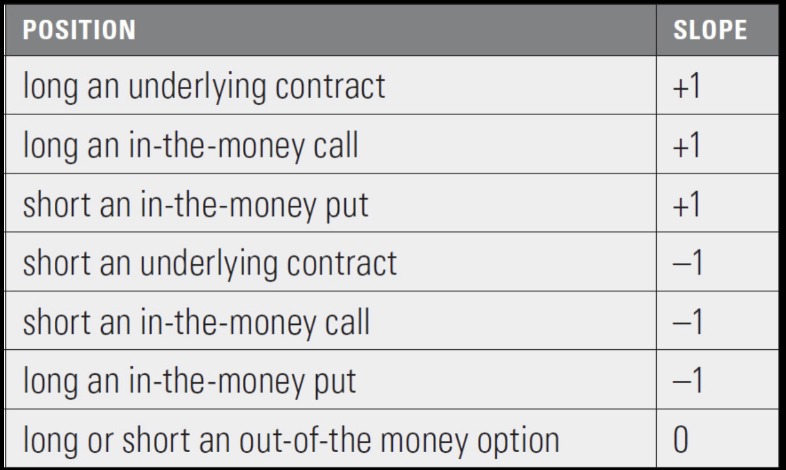
For each position below, what is the slope of the expiration graph over the given underlying price intervals? From these slopes,
sketch the shape of the expiration P&L graph. (The sketch need not be to scale-the approximate shape is sufficient.)
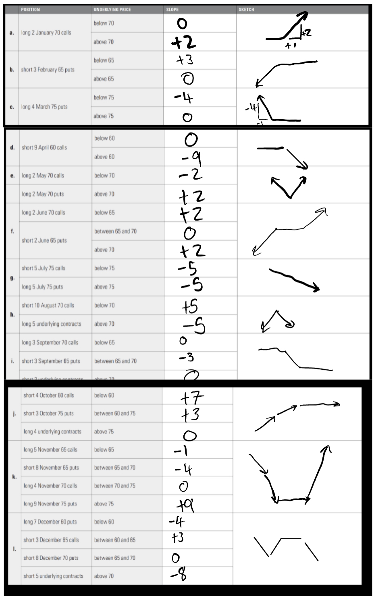
4. Using the underlying price and option prices below, draw the expiration profit and loss graph for the given
positions. What are the breakeven prices for each position?
Underlying price = 72.00
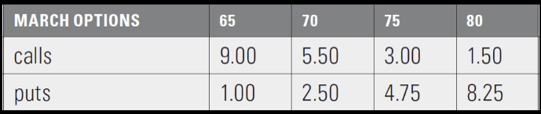
a. long a March 70 call
b. short a March 65 put
c. long a March 75 put
d. short a March 80 call
e. long a March 70 call and short a March 80 call
f. long a March 80 put and short 2 March 70 puts
g. short a March 70 call and long a March 70 put
h. long a March 70 put and long an underlying contract
i. long a March 65 put and short a March 75 call
j long a March 70 call and long a March 70 put
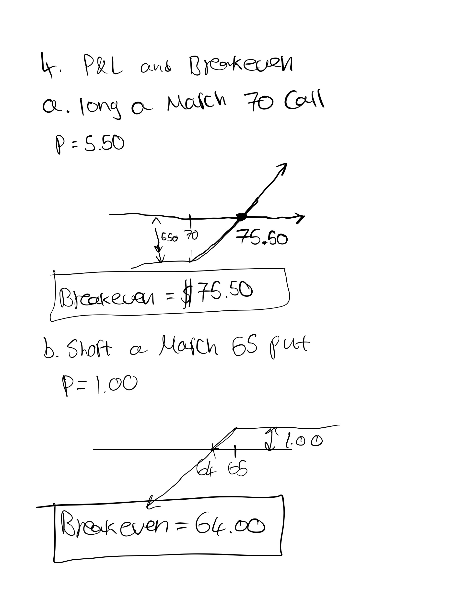
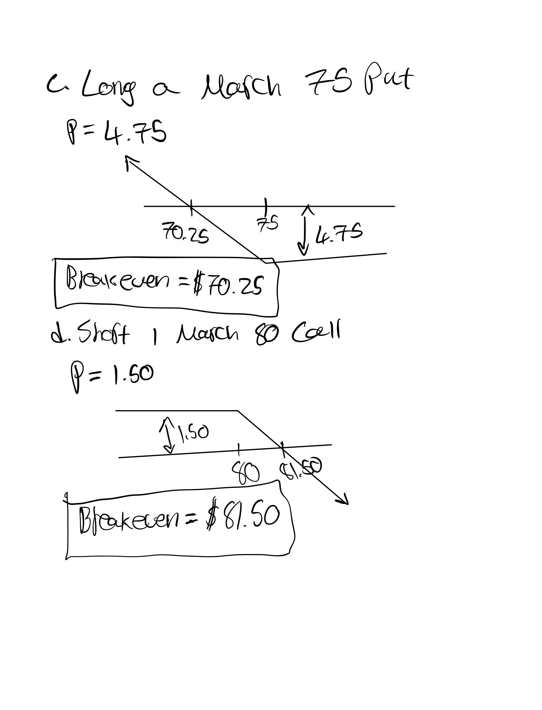
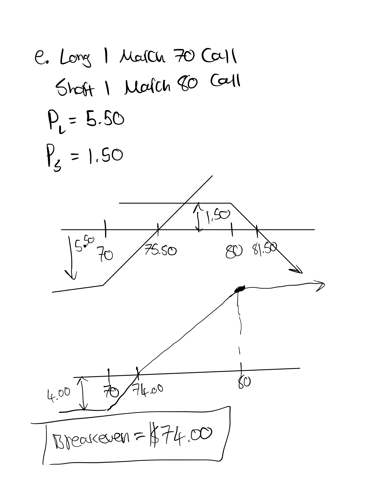
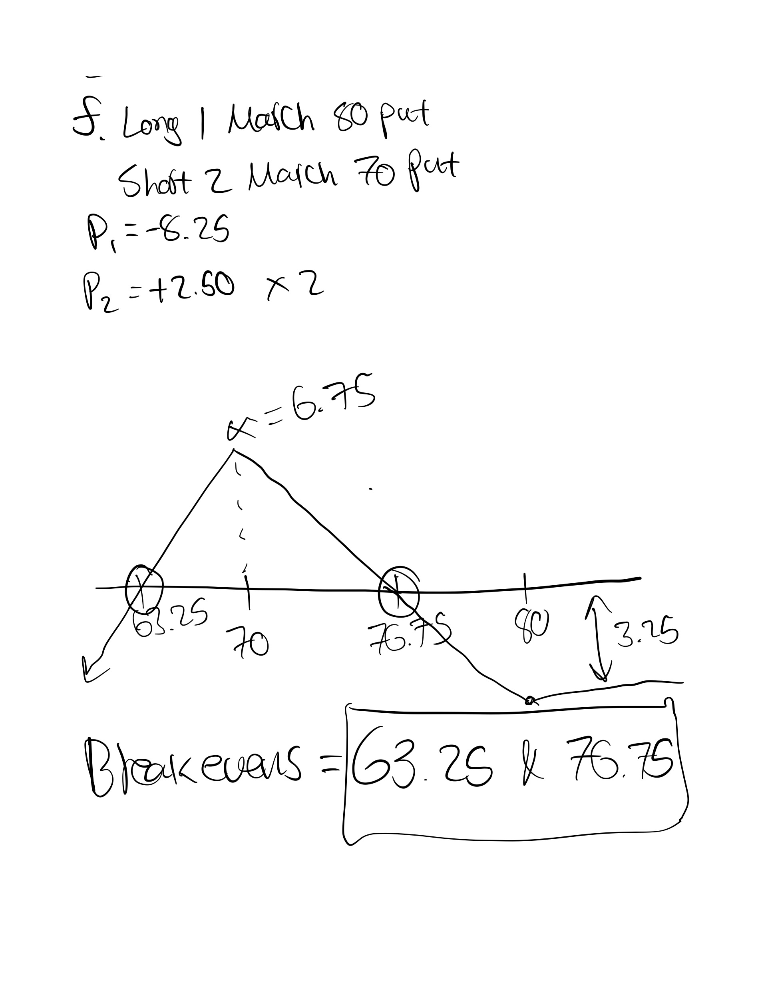
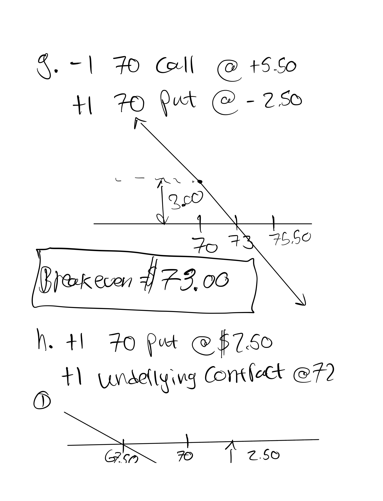
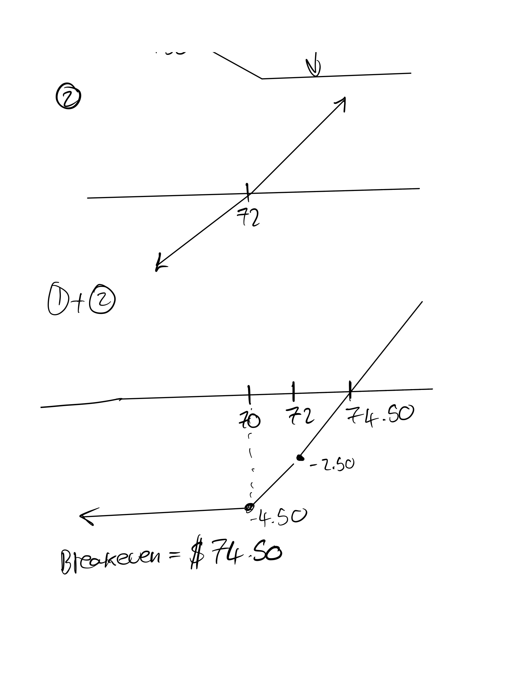
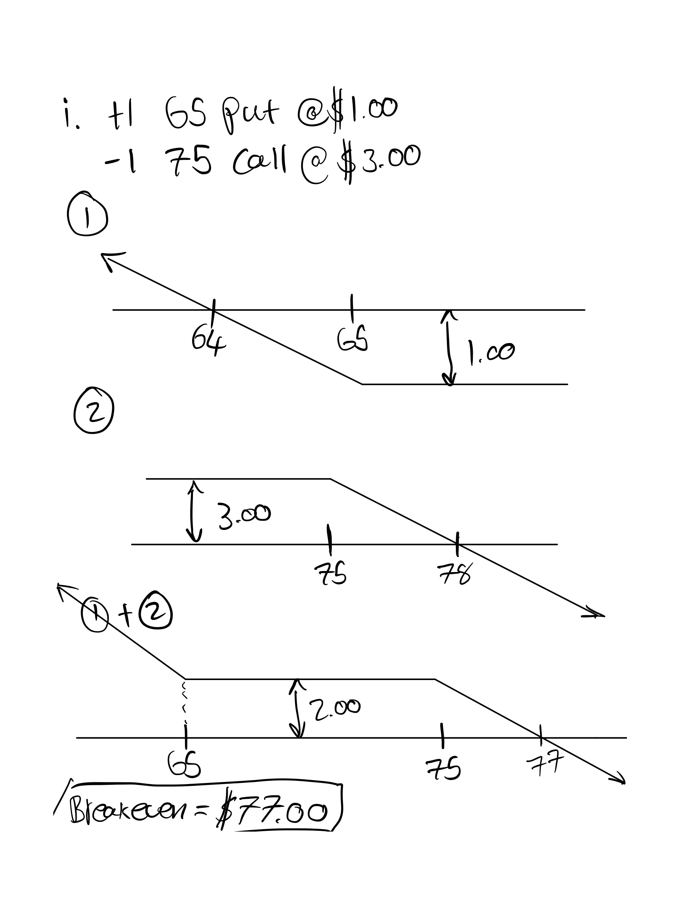
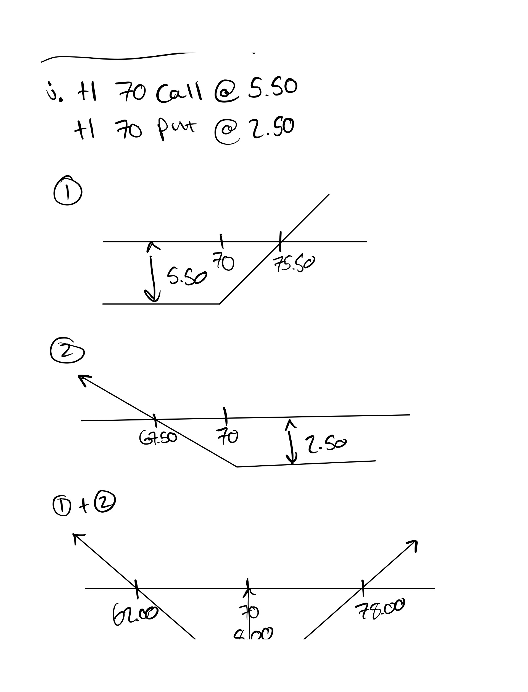